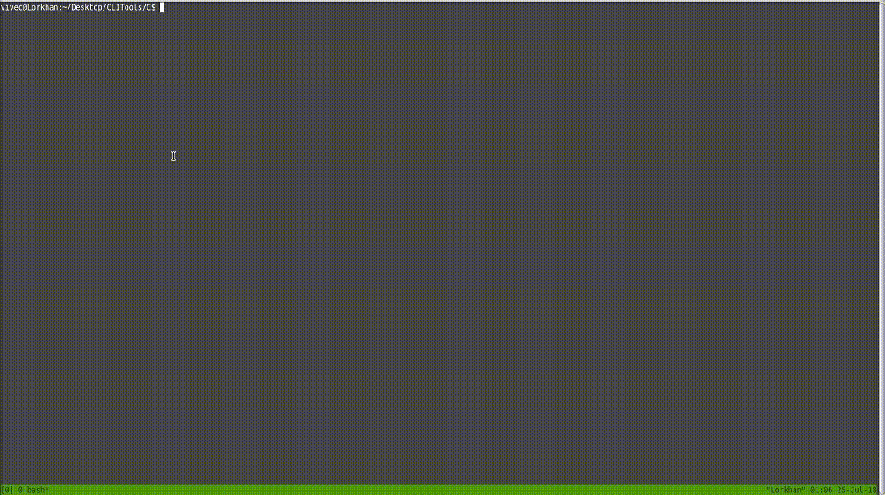
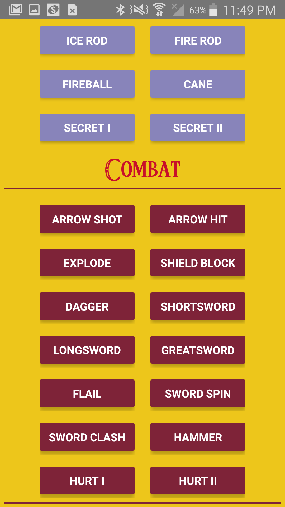
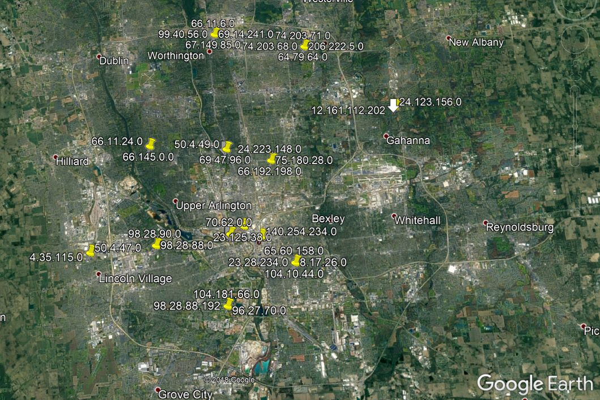
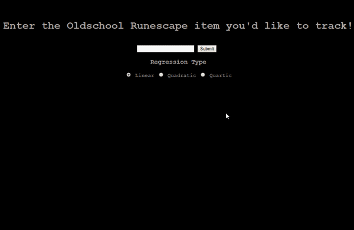

Hello! My name is Samuel Vidovich. I am a young mathematician from Kent State University with interests in software development and data analysis.
This page serves
as a resume for just about everything I've done so far. If you're interested in my curriculum, please find it here.
If you have any questions, please don’t hesitate to email me.
Python: Psycopg2, Scrapy, Numpy, Matplotlib / Matlab / C++: Eigen / C: ncurses / Mathematica / Docker / KML / Git / PostgreSQL / Shodan API / CLI: Powershell, Bash
NCurses Collection
This project is written in C. It uses the NCurses library, and has various attachments. Here is a preview of one that tracks mouse clicks and shoots fireworks at the click location:

Zelda Soundboard
This project is written in React Native. It is a soundboard that plays sounds from
The Legend of Zelda: A Link to the Past. It runs on Android only... for now. Here's a preview:

GeoIP Mapper
This project is written in python. It uses the Shodan and MaxMind APIs to cross-reference zip codes, and allows a user to map IP addresses of any city in the United States on Google Earth. Here's a Preview:

Virtual Honeypots (In progress)
This project is written with bash scripts, following the curriculum of a book called
Virtual Honeypots. This project allows a user to set up deceptive, emulated, high-interaction, scalable honeypots for network protection and investegation of an adversary's techniques.
Grand Exchange Analysis
This project is written in python. A flask application communicates with a PostgreSQL instance in a docker container to grab item ids, and using this information, scrapes item price information from the Grand Exchange, the auction house of the online game
RuneScape. Once the price information over the last 90 days is collected, the application runs one of three options in polynomial regression, returning an image of the regression curve overlaying the price values. The algorithm for regression is set up to run arbitrary degrees of regression. Here's a preview:
